Наука · журнал «ДентАрт» 2023 №1
Корекція парафункцій язика у ортодонтичних пацієнтів
Correction of the tongue parafunctions in orthodontic patients
Порушення функцій зубощелепної ділянки — дихання, ковтання, мовлення, жування — спостерігаються у 70 % ортодонтичних пацієнтів. Найскладнішою ланкою в їх нормалізації виявляється корекція функцій, пов'язаних із положенням язика під час ковтання та мовлення.
Розповсюдженість зубощелепних аномалій в Україні протягом останніх п'яти років утримується на рівні 70–80 %. Своєчасна діагностика та усунення змін функціонального навантаження ведуть до саморегуляції росту й розвитку щелепно-лицевої ділянки, тоді як відсутність корекції погіршує ситуацію: закріпившись з віком, одна парафункція призводить до нашарування інших. Порушення прикусу, що розвинулися через неправильне положення язика, характеризуються високим ступенем складності корекції і ризику рецидиву — навіть довготривале використання ретенційного апарата не завжди забезпечує стійкий результат.
Для лікування таких пацієнтів використовують як стандартні пристрої (міофункціональні трейнери, міобрейси, LM-активатори), так і індивідуально виготовлені (апарати з петлями Рудольфа, язикові заслінки), причому важливим є поєднання пристроїв з міогімнастичними вправами. Метою нашого дослідження стало порівняння ефективності сучасних стандартного (СП) та індивідуально виготовленого (ІВП) пристроїв для корекції парафункцій язика.
Матеріал і методи
На лікування взято 40 ортодонтичних пацієнтів віком 6–9 років з порушенням функцій ковтання та мовлення, розподілених на 2 групи. І група (20 пацієнтів) отримала індивідуально виготовлений пристрій для міогімнастики (патент України № 27801) — він складається з дентоальвеолярних кламерів, фрагментів базису нижньої щелепи та заслінки для язика у вигляді вертикальних дротяних петель, що спрямовують кінчик язика під час вправ. ІІ група (20 пацієнтів) отримала стандартний пристрій exerlangue (EF line specific, Orthoplus, Франція) — силіконову під'язикову капу з виїмкою для вуздечки язика та щічними щитами, що надягається на верхню щелепу.
Комплекс контрольованої міогімнастики включав загальнозміцнюючі вправи для корекції постави, вправи для м'язів, що висувають нижню щелепу, для над- та під'язикових м'язів і безпосередньо для м'яза язика; тривалість — не більше 3–5 хвилин кілька разів на день з обов'язковим контролем постави. Стан функцій язика оцінювали клінічним методом (функціональні проби, зокрема «ковтка води» та мовні проби зі звуками «с», «з», «ш», «т», «д», «н») та параклінічним (непряма фотопалатографія — аналіз «злизаних ділянок») на початку та через 6 місяців лікування.
Результати
Нормалізація положення язика під час ковтання через 6 місяців спостерігалася у 70 % пацієнтів І групи проти 40 % у ІІ групі. Відсутність порушень звуковимови зафіксовано у 9 пацієнтів (45 %) І групи та лише 4 (20 %) ІІ групи. Отже, позитивніша динаміка щодо нормалізації і ковтання, і мовлення спостерігалася у пацієнтів, які користувалися індивідуально виготовленим пристроєм. На фотопалатограмах після 6 місяців користування ІВП видно закономірне зміщення топографії «злизаних ділянок» у бік твердого піднебіння та пришийкову частину піднебінних поверхонь.
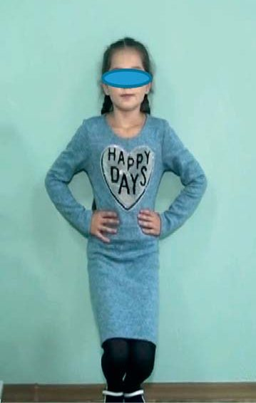
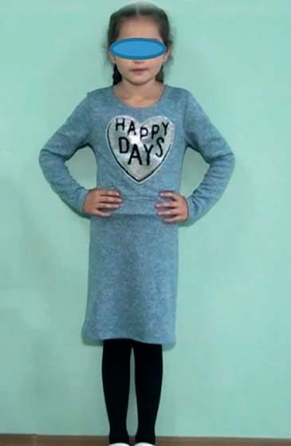
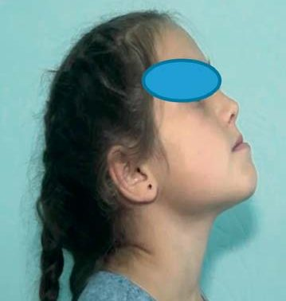
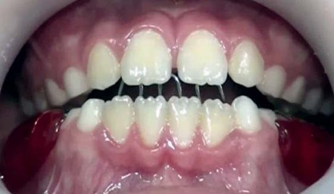
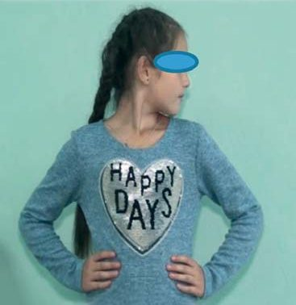
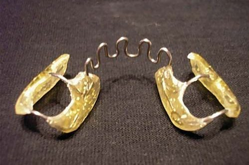
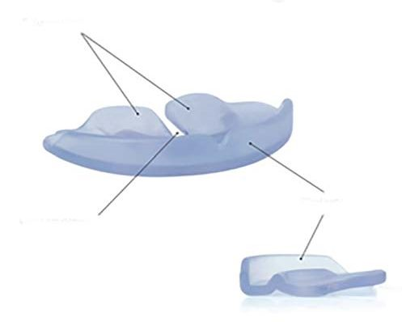
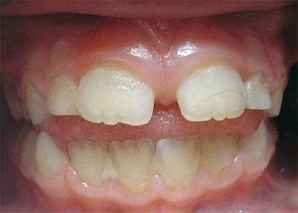
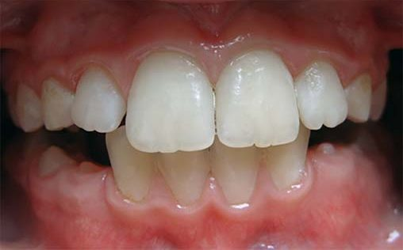
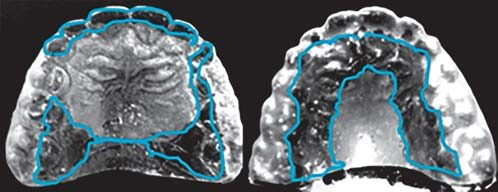
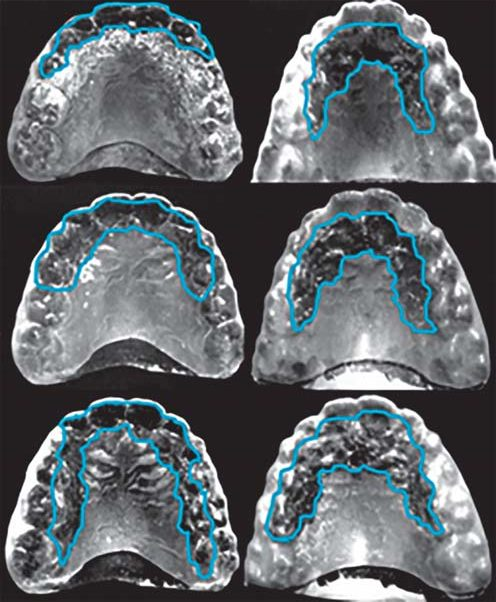
Переваги і недоліки пристроїв
- Індивідуальний пристрій (ІВП): легкий і гігієнічний, зберігає об'єм ротової порожнини, не обмежує рухів нижньої щелепи (дозволяє виконувати вправи в повному обсязі під контролем спрямовуючих петель), дешевший і доступніший. Недолік — потребує лабораторного етапу виготовлення.
- Стандартний пристрій (СП): легкий і гігієнічний, постійний контакт язика з піднебінням формує правильний стереотип ковтання. Недоліки — відсутність індивідуального підбору з урахуванням віку; утримується за рахунок змикання зубів обох щелеп, що унеможливлює рухи нижньої щелепи і не дозволяє виконувати мовні вправи в повному обсязі.
Висновки
Клінічні та параклінічні дослідження довели, що використання як індивідуально виготовленого, так і стандартного пристрою в комплексі з міогімнастикою дає позитивні результати щодо корекції положення язика під час ковтання і мовлення в обох групах. Але динаміка корекції в І групі значно перевищувала показники ІІ групи; корекція мовлення у ІІ групі ускладнювалася через конструктивні особливості стандартного пристрою. Корекція положення язика під час мовлення потребує тривалішого використання пристроїв, які контролюють і тренують язик.
Література
- Кочин О. В. Використання ортодонтичної стандартної функціональної апаратури для розширення звуженої верхньої щелепи. Збірник наукових праць співробітників НМАПО. К., 2012; 2: 135–138.
- Лихота К. М. Оцінка ефективності лікування зубощелепних аномалій індивідуально виготовленими міофункціональними апаратами. Проблеми військової охорони здоров'я. 2014; 41: 276–282.
- Лихота К. М. Клінічна оцінка ефективності ортодонтичного лікування пацієнтів із сагітальними аномаліями прикусу з використанням міофункціональної апаратури. Військова медицина України. 2015; 3(15): 65–68.
- Смаглюк Л. В., Карасюнок А. Є., Рудь В. Б. Функція мовлення та інтеграційні аспекти її корекції. Полтава: Астрея, 2015.
- Смаглюк Л. В., Трофименко М. В. Ортодонтичне лікування пацієнтів з порушенням функцій ковтання та мовлення. Полтава: Бліц Стайл, 2018.
- Cenzato N., Iannotti L., Maspero C. Open bite and atypical swallowing: orthodontic treatment, speech therapy or both? A literature review. Eur J Paediatr Dent. 2021 Dec; 22(4): 286–290.
- Condo R., Costacurta M., Perugia C., Docimo R. Atypical deglutition: diagnosis and interceptive treatment. A clinical study. Eur J Paediatr Dent. 2012; 13(3): 209–214.
- Giuca M. R., Pasini M., Pagano A., Mummolo S., Vanni A. Longitudinal study on a rehabilitative model for correction of atypical swallowing. Eur J Paediatr Dent. 2008; 9(4): 170–174.
- Kandel E. Alla ricerca della memoria. Torino: Codice edizioni, 2007.
- Koletsi D., Makou M., Pandis N. Effect of orthodontic management and orofacial muscle training protocols on the correction of myofunctional and myoskeletal problems in developing dentition. A systematic review and meta-analysis. Orthod Craniofac Res. 2018 Nov; 21(4): 202–215.
- Lykhota K. M., Petrychenko O. V., Ardykuce V. P., et al. Treatment of malocclusions in the temporal period of bite in children with speech disorders by means of myogymnastics and face taping. Balneo Research Journal. 2019; 10(3): 218–224.
- Maspero C., et al. Atypical swallowing: a review. Minerva Stomatol. 2014; 63(6): 217–227.
- Saccomanno S., Antonini G., D'Alatri L., et al. Case report of patients treated with an orthodontic and myofunctional protocol. Eur J Paediatr Dent. 2014; 15(2): 184–186.
- Smaglyuk L. V., Smaglyuk V. I., Liakhovska A. V., Trofymenko M. V. EMG-activity of muscles of the cranio-mandibular system during functions of the dento-facial region. World of Medicine and Biology. 2020; 1(71): 128–132.
- Tecco S., Baldini A., Mummolo S., et al. Frenulectomy of the tongue and the influence of rehabilitation exercises on the EMG activity of masticatory muscles. J Electromyogr Kinesiol. 2015; 25(4): 619–628.
- Fellus P. Succion et déglutition. Revue d'Orthopédie Dento-Faciale. 2014; 48(4): 425–428.
- Fellus P. De la succion-déglutition à la déglutition du sujet denté. Orthod Fr. 2016; 87: 89–90.
- Flutter J. Myofunctional influences on facial growth and the dentition. 2017. 216 p.
- Wishney M., Darendeliler M. A., Dalci O. Myofunctional therapy and prefabricated functional appliances: an overview of the history and evidence. Aust Dent J. 2019; 64(2): 135–144.